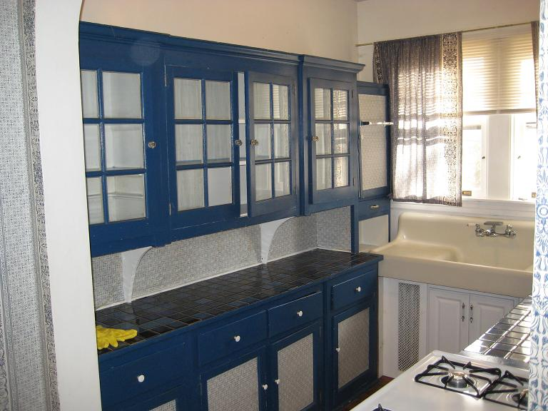
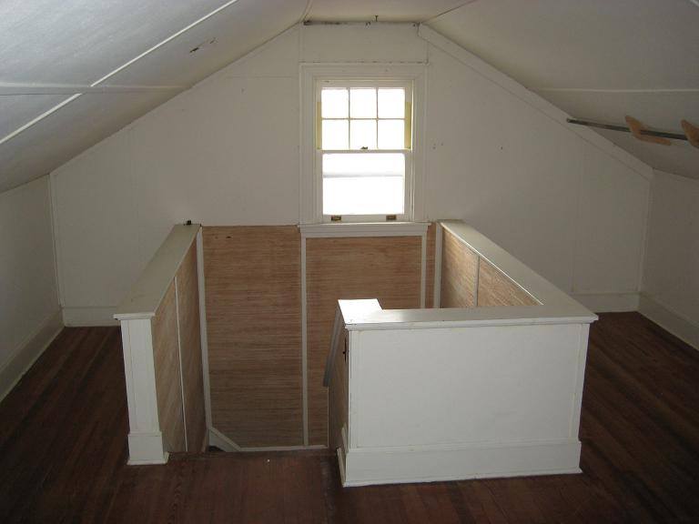

Available June 2012:
This classic 1920's style 3+ bedroom home is located in downtown Annapolis within walking distance of City Dock and is only a block off West Street and the new shopping areas from Park Place into Church Circle. It is one block from the Annapolis Historic District and about 3 blocks from the prestigous Spa Creek. It is also close to the US Naval Academy, St.Johns College and the Navy Marine Corps Statium as shown below
Access to Washington DC, is only a 30 minute route-50 interstate drive to the metro rail/subway station at New Carrolton ( map). Or walk 4 blocks to the Navy Marine Corps stadium where there are plenty of daily commuter buses to DC.
Also unique to this downtown home is a full size grass covered side lot which
you can see on the left. Since this photo was taken the fence has been upgraded to a nice
wood fence. And the front bushes have been trimmed way back.
You enter through a charming entryway with paladian window and convenient front closet
on the left.
Turning left into the Living room with working fireplace and leaded glass windows.
Turning right from the living room you enter the dining room with two glass-front
corner cabinets and beyond that the Sunroom.
The sunroom has 6 large windows, 3 on the left and
3 to the back with southeast and southwest exposure. Since this photo was taken, the
old blinds have been replaced with modern 1" blinds.
Before you go further to the right from th edining room into the rather unusual kitchen,
it might be useful to take a look at the floor plan:
Turning right from the dining room, you enter into the long kitchen hallway.
Looking back right
you see the kitchen is accessible through a door in the main entry way and can see
the front door. On the left is the refrigerator and a convenient set of
glass cabinets serving as the pantry on the right.
Turning back left, you are in the small eat-in kitchen area with back door.
On the right you can just see the edge of the door to the basement staircase.
Further into the kitchen you see the unique set of Blue Glass-front Cabinets on the left
and full size double porcelean sink.

Then on the right, are a set of smaller glass kitchen cabinets, the gas stove
and the dishwasher underneath the tile cabinet surface...
Going back out to the entryway, the view from the front door, peers back into the
kitchen and on the right are the beautiful oak stairs to the upstairs via
a half-way landing and dog-leg to the left to the upstairs hall.
At the top of the stairs, in the
main hallway facing the front of the house, on your right will be the back right
sun-filled bedroom with southeast and southwest exposures..
Going down the hallway to the front of the house is the Master Bedroom on the right
with dual windows looking out on the front street Southgate Avenue.
Turning left again, you will see the front bedroom which also has dual windows
overlooking the front street, and a side window to the left.
Turning around, you will look back down the hallway to the bathroom which is
rather unique in that the WC is in a separate room from the sink and bathtub/shower.
The first door on the right is the attic stairway, and the second door is the
linen closet. Beyond that is the top of the stairway going down to the
first floor.
On the right of the separated toilet room is the bath room with rear window view
and classic porcelean tub.
Turning to the right you see the classic 1920's pedestal sink and fixtures.
Taking the two-landing stairway upwards brings you to the attic. The attic is a
large finished room as shown below.
Looking back at the stairway from the attic:

From the attic, circulating clockwise down multiple stairs and landings,
to the second floor, then
to the first floor and then to the basement, you will find another large room
or den with ceramic tile floors and wooden beams. Unfortunately, when this
photo was taken, the previous tennants had not yet removed all their junk.
And turning to look towards the back, you see the back basement door and
a second door into a large storage area. THe back basement door opens into a
partially enclosed basement porch area useful for dry firewood and a place for the
lawn mower. Under the window is a hidden pair of 3/4 heigh doors that
hide a full array of shelves suitable for games and other storage. And to hte
right of that, (not seen) is a small door under the stairs behind the freezer
for additional storage.
And turning back to the right, you see the stairs and to the right of that
and behind the antique pay-phone,
the entrance to the elevated bath and laundry room.
Inside the basement bathroom is an elevated toilet and neo-angle shower to the right.
On the left is a casement window over the bowl sink. Under the cabinet to the right
are the washer and dryer.
RENTAL TERMS:
The house is available now for $2195 per month to qualified individuals and
$2195 security deposit. The home was changed over from oil to gas in 2010.
Contact Bob at 410-293-6417 days or 410-553-6021 evenings.
{kind=link}